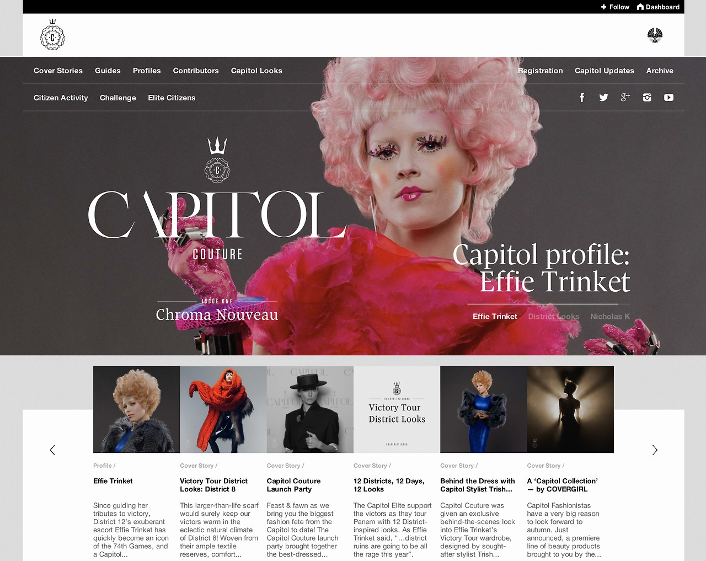

06/20/2013 13:14:40
¶
●
Late Monday afternoon we got a call from the Yahoo! team to see if Style Hatch would be up for working on a custom theme for yahoo.tumblr.com and six of their other product blogs. The challenge was that we had roughly 48 hours to complete the project in time for today’s announcement that the deal to acquire Tumblr was final.
It was quite ambitious to turn it around in such a short time, but 118 commits, 40 issues, 4,548 additions and 2,286 deletions later we were able to turn Cadence into a unique and special theme for Yahoo. I couldn’t have done it without Mikey Wills on our team.
One of the creative directors on the project summed it up perfectly:
It’s quite possible that there’s no other platform out there that you could possibly develop such a robust, flexible and beautiful theme for in 48 hrs.
Overall I have been incredibly impressed Yahoo! team throughout the process. They have a talented team, and I’m certain Yahoo! is on track and heading in a fresh direction. Best of all, I’m even more optimistic that Tumblr is going to thrive.
#yahoo #tumblr #style hatch #themes
06/09/2013 10:47:50
¶
●
A human being should be able to change a diaper, plan an invasion, butcher a hog, conn a ship, design a building, write a sonnet, balance accounts, build a wall, set a bone, comfort the dying, take orders, give orders, cooperate, act alone, solve equations, analyze a new problem, pitch manure, program a computer, cook a tasty meal, fight efficiently, die gallantly. Specialization is for insects.
Robert A. Heinlein, quote from Bobby McKenna’s talk at Valio Con 2013
#ideas
06/05/2013 11:14:38
¶
●

Capitol Couture
The Hunger Games is back on Tumblr with their latest refresh of the Capitol Couture blog. Hands down this is one of the most beautiful and flawlessly executed themes I have seen a brand create for Tumblr. Brands and agencies take note, this is how it should be done.
Anyone know what agency is behind the creation of this campaign?
#design #tumblr #themes #the hunger games
06/03/2013 11:46:43
¶
●
staff:
music:
ATTN: Audiophiles!
You can now post SoundCloud sets to your blog! Just share to Tumblr from SoundCloud or paste the set URL into the “external URL field” when creating a new audio post.
To celebrate, we put together a super rad 15-song playlist featuring some of our favorite bands on Tumblr.
Follow our official music blog and track #music for all your music needs.
We just did a quick test with the new SoundCloud sets feature, and thanks to some recent improvements it should work flawlessly with all of the Style Hatch Tumblr themes! If you run into any issues let us help you out - support@stylehatch.co
#tumblr #soundcloud #themes #style hatch
06/03/2013 11:40:50
¶
●

Labyrinths of Salt
"Drawing a labyrinth with salt is like following a trace of my memory," — Motoi Yamamoto
#art #salt #labyrinth #installation
06/03/2013 11:15:44
¶
●

parislemon:
I REALLY love these animations.
Tumblr nails the details like this better than any other platform their size.
#tumblr #animation #details
06/03/2013 11:07:44
¶
●
In theory, what you do first is give your users or your customers something new to play with. They get familiar with it and they start to develop patterns around it. You learn about how those patterns are working and you learn about the things that, if it is an interface change, what are they experiencing in the new interface? How is the usability? What do they like? What don’t they like?
We take it over the course for a few days, because on day one, change is always hard. But after a few days, users start to get use to their new surroundings—and then you take those new surroundings away from them. On that last day, we consider that the actual deprivation study: You are putting the old thing that they were used to back in front of them. Then you measure the emotion around those three days of changes. Are they disappointed to have the old thing? Do they miss the new thing?
#design #product #testing